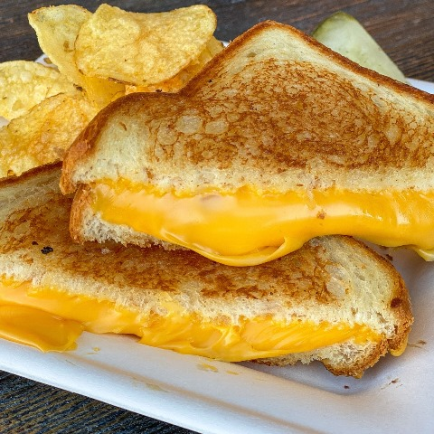

Breakfast Recipes
Cracker Barrel Pancakes

These Copycat Cracker Barrel Pancakes are easier to make than most pancake recipes you can get your hands on! Just 5 ingredients and 5 minutes to have hot buttermilk pancakes from scratch on the griddle. I would also like to think they will be the best pancakes you have ever eaten!
View RecipeClassic French Toast

This French Toast recipe has become a staple in my kitchen—it’s hands down one of my favorite ways to start the day! The batter is thick and perfectly flavored with cinnamon and sugar, which gives each bite a warm, cozy taste that everyone loves. Whether I'm making it for a weekend brunch or a quick family breakfast, this recipe always feels a little extra special and never disappoints.
View RecipeBreakfast Burritos
Ah, breakfast burritos. Is there anything better when you need a perfect pick-me-up or a breakfast-for-dinner treat? My go-to version is loaded with crispy hash browns, smoky bacon, fluffy scrambled eggs, creamy avocado, and plenty of cheese. But the real beauty of a breakfast burrito is its flexibility—there's no one right way to make it. Just follow a few simple steps, and you’re set for a delicious, foolproof breakfast burrito every time.
View RecipeLunch Recipes
Chicken caesar Salad
This delicious chicken caesar salad can be thrown together easily on a work night. I took this to a carry in at my SIL's and was so embarrassed because everyone raved about the salad and kept going back for seconds (and thirds!) but said nothing about her main meal entry.
View RecipeSteak Burrito Bowl
A healthy 30-minute steak burrito bowl that tastes identical to Chipotle. It combines seasoned grilled steak pieces, fresh veggies, rice, and shredded cheese and is topped with fresh pico de gallo, guacamole, and creamy lime crema.
View RecipeClassic Grilled Cheese
This grilled cheese is all about the crust. Choose a hearty bread, butter it up, and shred your favorite cheddar for the best grilled cheese ever: crispy-crunchy on the outside and melty in the middle. My recipe relies on shredded, rather than sliced, cheese for a quicker melt and the world’s most impressive cheese pull.
View RecipeDinner Recipes
Fried Beef Tacos (Arizona Tacos)

These crispy fried beef tacos—sometimes called "Arizona Tacos"— are having a moment on TikTok. You press the raw meat onto the tortilla before frying the whole thing for the ultimate crunchy exterior with a tender, juicy filling. And they're easy to make—Click the link to learn how.
View RecipeJerk Chicken “Rasta” Pasta
Rasta Pasta is a delicious and flavor-packed meal, perfect for a weeknight dinner. It is a rich, cheesy, and all-round great meal to savor with family and friends. You’ll need less than 1 hour to prepare this!
View RecipeShrimp Scampi
A Classic shrimp scampi is one of the most-searched recipes on FoodNetwork.com every summer — even more popular than burgers, according to our records. This Classic shrimp scampi is a dish made with garlic, butter, white wine, lemon juice and chopped parsley.
View RecipeDessert Recipes
Banana Pudding

This easy, old-fashioned Banana Pudding is made from scratch with layers of homemade vanilla pudding, Nilla wafers, sliced bananas, and whipped cream.
View RecipeBlueberry Cheesecake
To say this Blueberry Cheesecake is bursting with blueberries is an understatement! Baked to achieve that elusive light-yet-rich creamy cheesecake filling, studded with blueberries inside and smothered in an incredible glossy blueberry sauce topping. It’s magnificent!
View RecipeStrawberry ShortCake
This strawberry shortcake is the classic, biscuit-style shortcake — not the pound cake variety. The cake is sliced in half and layered with sweet juicy strawberries and whipped cream for a delicious summer treat!
View Recipe